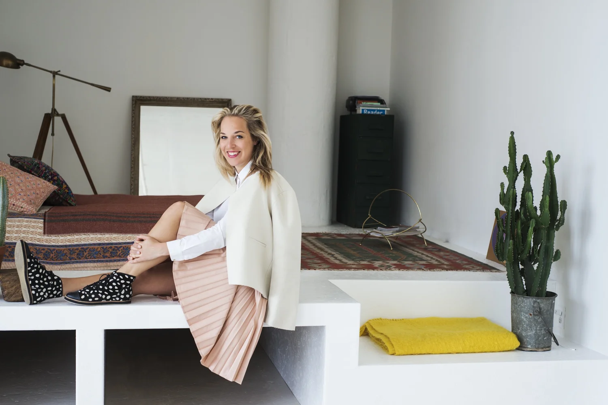
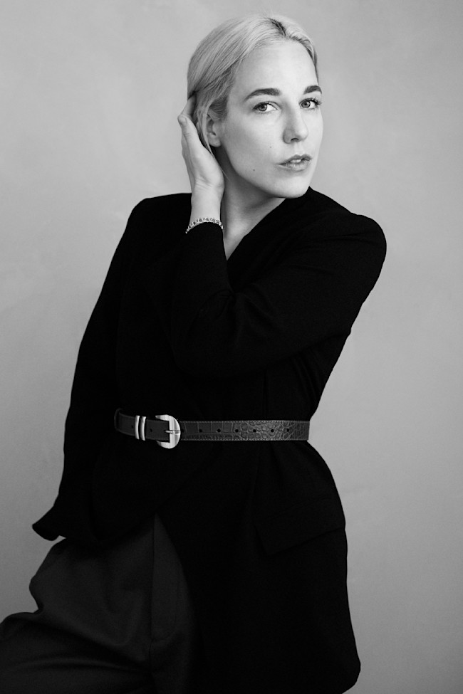
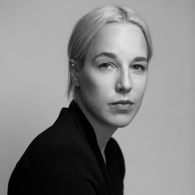
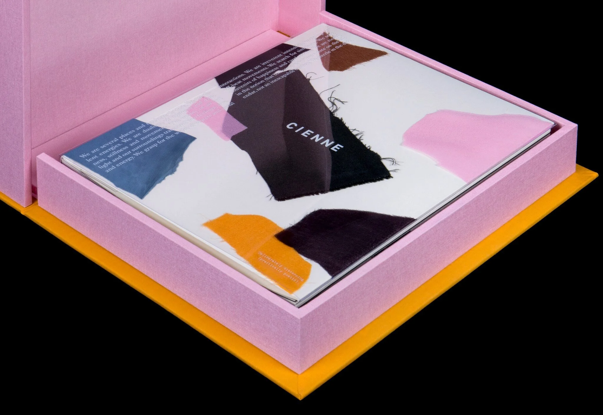
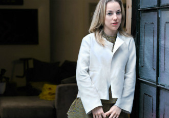

Лотта Ниеминен

Интересные факты
Ниеминен получила награду YoungGuns Awards 2010 и звание «Новый визуальный художник» года по версии журнала Print.

Лотта Ниеминен
Финская ассоциация дизайна Grafia назвала ее «Графическим дизайнером года 2019».

Лотта Ниеминен
Она была членом отборочной комиссии по выбору Графического дизайнера года 2020.

Лотта Ниеминен
Ее работы выставлялись в Музее дизайна в Хельсинки и в рамках Недели дизайна в Хельсинки.

Работы Лотты Ниеминен
Ниеминен даже попала в список 30 Under 30 журнала Forbes.

Лотта Ниеминен